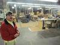
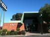

Business
-
Delgado Brothers: the framework of a legacy
1/24/12, 12:08 p.m.
Between Avalon and Central runs a street with a particularly industrial feel: 59th Street, where bland warehouses often in need of repair loom on either side of the road and driving is hard on a car's shocks. There is one building, however, whose unassuming look betrays a rich history: Delgado Brothers Picture Frames.
-
Record store owner works to keep South LA's beat going
1/3/12, 2:04 p.m.
Serge Ureta's Bombass Muzik is looking for the next hip-hop star and giving back to the community any way he can in the meantime.
-
Recession steals from South LA security giant
12/29/11, 2:18 p.m.
Himco Security's products have stood up against all but a handful of burglars during the past four decades, but they could not stop the recession from robbing the business.
-
Study of Vernon Central aims to improve business by branding neighborhood
12/16/11, 6 a.m.
A new study aims to shape marketing campaigns, stimulate business and help brand Central Avenue businesses in Vernon Central.
-
ANNOUNCEMENT: Box Brothers is now open
12/6/11, 10:56 a.m.
South Los Angeles has a new business providing a multitude of services that benefit both businesses and residents in time for the holidays!
-
Forget about a dream job, college grads taking whatever they can
11/3/11, 11:23 a.m.
As the economy continues to flounder, a growing number of college grads are shifting their priorities away from forging a career path in their desired field to more immediate demands, such as paying the bills.
-
L.A. Gang Tours as creative engine for commerce
10/20/11, 4:28 p.m.
The L.A. Gang Tours show tourists a different side of Los Angeles. But is it enlightening or exploitative?
-
Broadway Federal Bank closes two branches, but opens up to future opportunities
10/12/11, 3:51 p.m.
Two Broadway Federal bank branches are closing. What does that mean for the bank's future?
-
Inside the Shadow Economy — A growing underworld bazaar
9/30/11, 10:51 a.m.
In a shadow economy, workers are often unsafe and ruthlessly exploited, while governments are deprived of crucial revenue — yet still forced to foot the bill for essential services.
-
Hispanics and Blacks missing in gaming industry
9/13/11, 1:45 p.m.
A recent study by University of Southern California Professor Dmitri Williams found an overwhelming lack of diversity in video game characters.
About Us
OnCentral is a site for the neighborhoods around Central Avenue. It's a news site where we not only provide information, but put the power of storytelling in your hands. Sign up and you can share your story or help an existing story grow by adding in your perspective or corrections.
Follow OnCentral


- Most Viewed
- Most Commented